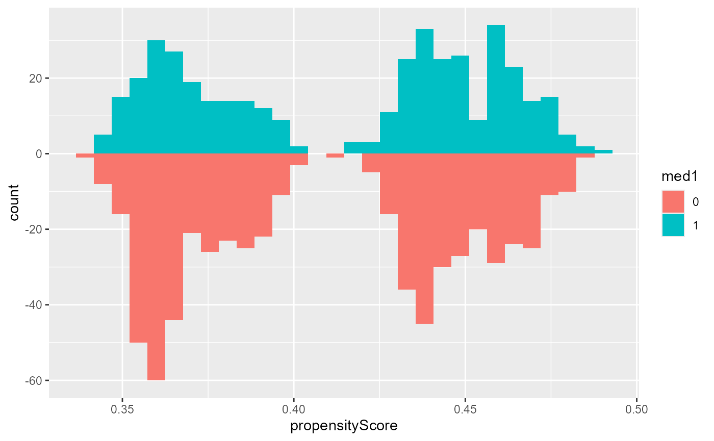
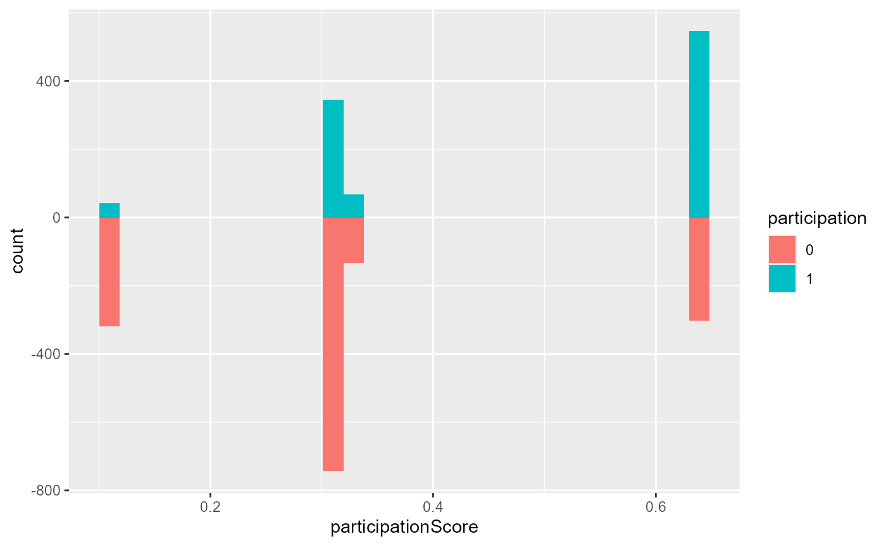
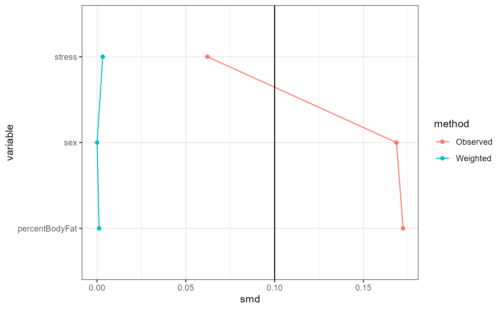
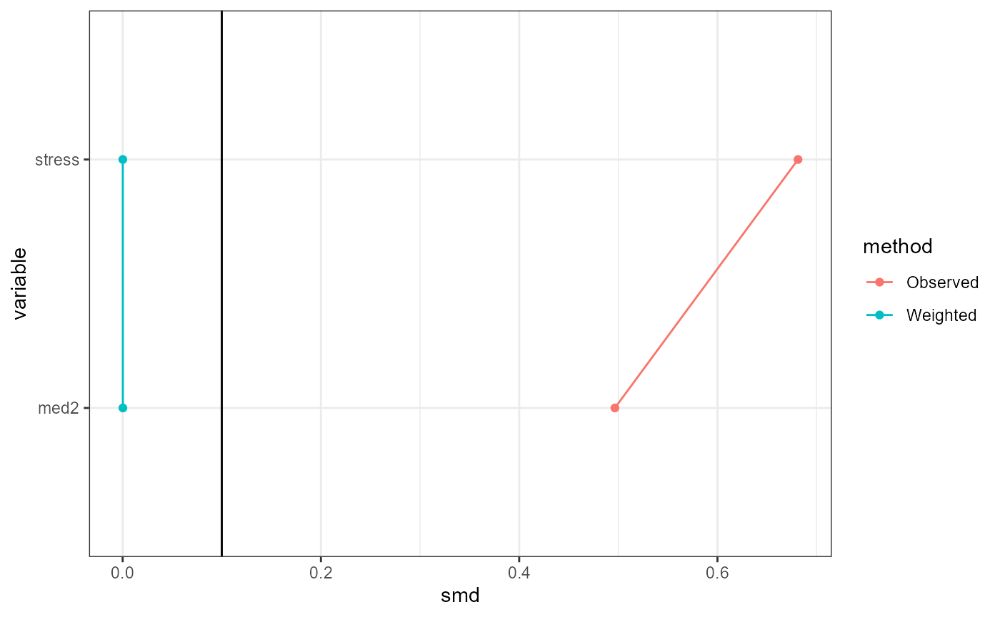

Transportability analysis using IOPW with TransportHealthR
transportIP.RmdIntroduction
Transportability analysis is the statistical problem of estimating causal effects of a treatment on a response for a target population using data gathered from a different population i.e. the study population. It is often used to apply findings from a randomized clinical trial to a population with substantially different characteristics or when it is too difficult to collect data from the population of interest. Marginal causal effects of the study and target populations are often not equal due to the different distributions of effect modifiers between the two populations, so causal effect estimates calculated using samples from the study population are biased for the causal effect of the treatment in the target population. Therefore, effect modification must be accounted for to obtain unbiased causal effect estimates in the target population using data from the study population.
A approach to transportability analysis is inverse odds of
participation weighting (IOPW), which weighs observations in the study
data by the inverse odds of each observation participating in the study
given its effect modifiers in addition to previous weights used for
covariate adjustment. The TransportHealthR package provides
functions that streamline this approach.
Example
Suppose we are interested in estimating the causal effect of a medication on systolic blood pressure in a target population, but we were only able to conduct an observational study using samples from the study population. To obtain unbiased causal effect estimates using the study sample, we account for the following covariates: sex (1 for male), percent body fat, and stress (binary, 1 for stressed). Suppose further that using domain knowledge, we know that the effectiveness of the medication depends on stress levels and whether patients are taking another medication (yes or no), so these variables are effect modifiers. Notice that covariates adjusted for in the study data can also be effect modifiers. We can perform this analysis as follows.
Firstly, the data from the study and target population may be separate or merged. If they are separate, put them together in a list. Make sure that the study data has the response and treatment columns, while the target data do not (which is the case 99% of the time). If they are merged, make sure that
- The response and treatment columns for the target data are
NA, and - There is a binary variable indicating which observations are in the
study data and the target data, with participation being coded as
1orTRUE.
Suppose that we have the study and target data separately as follows.
names(testData)
#> [1] "studyData" "targetData"
print("Study data:")
#> [1] "Study data:"
head(testData$studyData)
#> sysBloodPressure med1 sex stress med2 percentBodyFat
#> 1 109.4347 1 1 0 0 16.84868
#> 2 115.9803 0 1 1 0 14.48698
#> 3 112.7886 0 1 0 0 15.53636
#> 4 107.6026 1 1 0 0 13.76442
#> 5 120.6845 0 0 1 0 30.08657
#> 6 113.4424 0 1 0 0 16.23256
print("Target data:")
#> [1] "Target data:"
head(testData$targetData)
#> sex stress med2 percentBodyFat
#> 1 0 1 0 26.12896
#> 2 1 1 0 12.04972
#> 3 1 1 0 12.55972
#> 4 0 0 1 27.07130
#> 5 1 1 0 11.85846
#> 6 0 1 0 27.64520We can now perform transportability analysis with the IOPW approach
using the transportIP function. This function needs:
- A formula expressing the marginal structural model (MSM) to be fit,
set in the
msmFormulaargument, - A formula or a
glmobject expressing the propensity model i.e. a model of treatment assignment in terms of covariates, set in thepropensityScoreModelargument. If a formula is provided, logistic regression is used by default. Custom propensity weights from other weighting methods can also be provided to thecustomPropensityargument instead; in this case, do not setpropensityScoreModelbecause it isNULLby default and will be overridden. - A formula or a
glmobject expressing the participation model i.e. a model of study participation in terms of effect modifiers, set in theparticipationModelargument. If a formula is provided, logistic regression is used by default. Custom participation weights from other weighting methods can also be provided to thecustomParticipationargument instead; in this case, do not setparticipationModelbecause it isNULLby default and will be overridden. - The type of MSM to be fit, set in the
familyargument. This can be any of the families that are used inglmor one of"coxph"or"survreg". The latter options are for survival analysis and will use default options of these methods from thesurvivalpackage. - The study and target data, separate or merged, set in the
dataargument - Whether a transportability analysis or generalizability analysis is
done, set in the
transportargument (true for transportability, which is by default). Generalizability analysis weighs by inverse probability of study participation rather than odds.
These components are put together as follows. Here,
sysBloodPressure is the response and med1 is
the treatment. Recall that sex, percent body fat and stress are
covariates controlled for in the study, while other medication and
stress are effect modifiers.
result <- transportIP(msmFormula = sysBloodPressure ~ med1, # MSM formula
propensityScoreModel = med1 ~ sex + percentBodyFat + stress, # Propensity model
participationModel = participation ~ stress + med2, # Participation model
family = gaussian, # Type of MSM
data = testData, # Data
transport = T # Perform transportability analysis or generalizability analysis
)To show the results of the analysis, use the summary
function like you would for lm. This prints out covariate
balance tables pre- and post-weighting for covariates between treatment
groups (using propensity weights only) and effect modifiers (using
participation weights only) between study and target data, as well as a
summary output of the MSM model fit with the correct standard errors
calculated by sandwich::vcovBS. For the effect modifiers
balance table, the weights used are inverse odds for study data and 1
for target data in a transportability analysis, and inverse probability
for all observations in a generalizability analysis. Note that if custom
participation weights are provided, the balance tables default to a
transportability analysis since only the weights for observations in the
study data are provided.
summary(result)
#> Absolute SMDs of covariates between treatments before and after weighting:
#> variable smd method
#> sex sex 1.686088e-01 Observed
#> percentBodyFat percentBodyFat 1.723317e-01 Observed
#> stress stress 6.216350e-02 Observed
#> sex1 sex 3.720148e-05 Weighted
#> percentBodyFat1 percentBodyFat 1.157406e-03 Weighted
#> stress1 stress 3.204378e-03 Weighted
#> Absolute SMDs of effect modifiers between study and target populations before and after weighting:
#> variable smd method
#> stress stress 0.6813098772 Observed
#> med2 med2 0.4965440683 Observed
#> stress1 stress 0.0001397205 Weighted
#> med21 med2 0.0002326560 Weighted
#> MSM results:
#>
#> Call:
#> stats::glm(formula = msmFormula, family = family, data = toAnalyze,
#> weights = finalWeights)
#>
#> Coefficients:
#> Estimate Std. Error t value Pr(>|t|)
#> (Intercept) 116.715 0.169 690.31 < 2e-16 ***
#> med11 -1.771 0.497 -3.56 0.00039 ***
#> ---
#> Signif. codes: 0 '***' 0.001 '**' 0.01 '*' 0.05 '.' 0.1 ' ' 1
#>
#> (Dispersion parameter for gaussian family taken to be 69.24548)
#>
#> Null deviance: 71451 on 999 degrees of freedom
#> Residual deviance: 69107 on 998 degrees of freedom
#> AIC: 6333
#>
#> Number of Fisher Scoring iterations: 2The transportIP object produced by the
transportIP function contains the model fitting objects for
the propensity model, the participation model and the MSM. You can use
methods like coef and residuals on these
objects themselves. This is not implemented by the package because they
are not as useful as implementing summary.
The validity of transportability analysis depends on some
assumptions, including positivity and conditional exchangeability.
Positivity is the assumption that at all observed levels of covariates
and effect modifiers, the probabilities of being in the treatment group
and being the study are neither 0 nor 1, respectively. To evaluate this
assumption for the treatment assignment and study participation, use the
plot function with type = "propensityHist" or
type = "participationHist", respectively. This outputs
mirrored histograms of probabilities of being in the treatment group for
different treatment groups or of participating in the study for the
study and target data, respectively. Non-overlap of the ranges of the
histograms suggest violations of positivity.
plot(result, type = "propensityHist")
plot(result, type = "participationHist")
Conditional exchangeability is roughly the assumption that the only
possible confounding is due to the controlled covariates and effect
modifiers. Under this assumption, IOPW estimates will be reliable if the
weighted distributions of covariates and effect modifiers are similar
between treatment groups and the study and target data, respectively.
This can be (partially) evaluated using standardized mean differences
(SMDs), which are shown in table form by the summary
function. The plot function with
type = "propensitySMD" or
type = "participationSMD" provides graphical versions of
these tables. A general guideline is that an SMD of below 0.1 indicates
balance.
plot(result, type = "propensitySMD")
plot(result, type = "participationSMD")
Model coefficient plots showing confidence intervals of the effect
estimates are provided by plot function with
type = "msm". The standard errors are the correct ones
calculated by sandwich::vcovBS.
plot(result, type = "msm")
Note that all plot outputs are ggplots, so if you have
ggplot2 installed, you can customize them further.